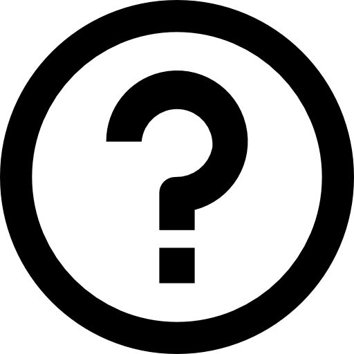

關鍵字設定
關鍵字設定
文章列表
負評告警
熱門關鍵字
正負PN值
關鍵字規則
一組關鍵字群組必須填入名稱，且至少需要一個關鍵字，並依序填寫
第一組條件篩選() 中必須於第一空格內填入一個關鍵字，第二組條件篩選()可視需求填寫
範例：資生堂 and (粉餅 or 粉底液 or 蜜粉) →尋找出現資生堂的文章，且內文中同時包含粉餅或粉底液或蜜粉
範例
主題：
搜尋關鍵字：
群組一
資生堂 and (粉餅 or 粉底液 or 蜜粉)
目前關鍵字設定

 一組關鍵字群組必須填入名稱，且至少需要一個關鍵字，並依序填寫第一組條件篩選() 中必須於第一空格內填入一個關鍵字，第二組條件篩選()可視需求填寫範例：資生堂 and (粉餅 or 粉底液 or 蜜粉) →尋找出現資生堂的文章，且內文中同時包含粉餅或粉底液或蜜粉
一組關鍵字群組必須填入名稱，且至少需要一個關鍵字，並依序填寫第一組條件篩選() 中必須於第一空格內填入一個關鍵字，第二組條件篩選()可視需求填寫範例：資生堂 and (粉餅 or 粉底液 or 蜜粉) →尋找出現資生堂的文章，且內文中同時包含粉餅或粉底液或蜜粉